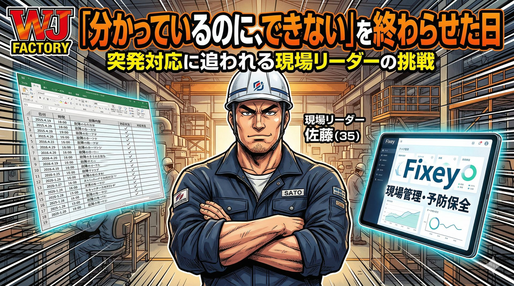

Fixey マンガシリーズ
現場の「困った」をAIが解決する。
保全の現場で起きるリアルなストーリーを漫画でお届けします。
第1弾
知らなければ1日止まっていた故障
配属2週間の山田が突然の設備停止に直面。経験ゼロでも、AIの力で30分で復旧を成し遂げる。
読む →
第2弾
「あの人しか分からない」を終わらせた日
ベテランしか対応できない属人化の壁。高橋はFixeyを使い、誰もが対応できる現場へと変えていく。
読む →

第3弾
「分かっているのに、できない」を終わらせた日
突発対応に追われ、予防保全が後回しに。佐藤がFixeyで「先送り」を断ち切り、現場を変える物語。
読む →